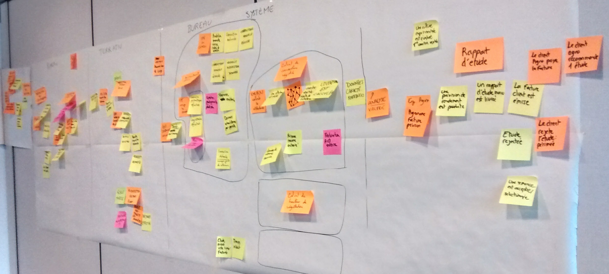
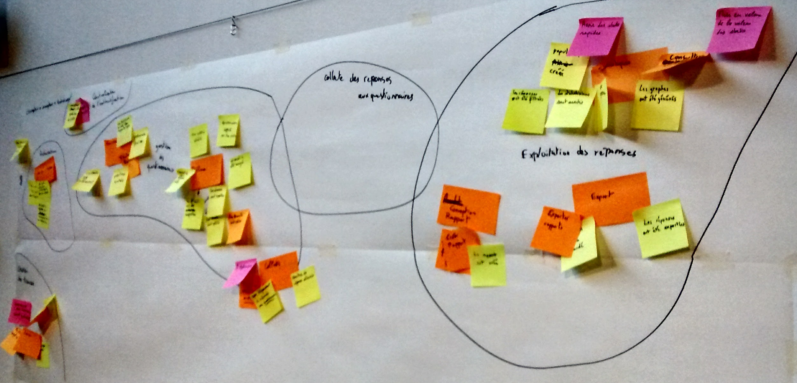
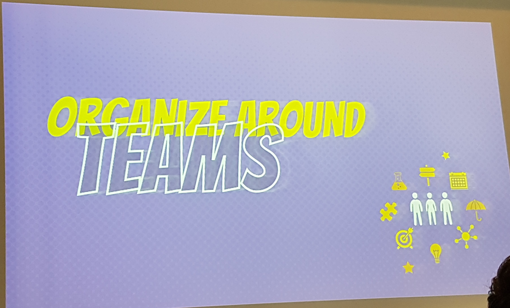
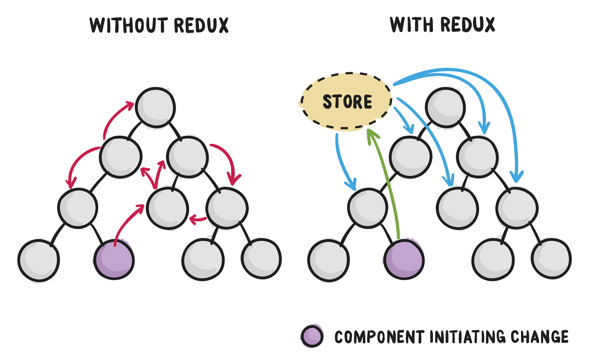

Le guide du snowcampeur
ou comment rater efficacement 3 stand-up !
Snowcamp.io - 2.0
Organisation
- 8 * 3h = 24h d'universités (nous: 4 * 3h)
- 2 * 1h Keynote
- 40 * 50min ~ 33h de conférences
--> 25h à vous raconter !!
Agilité/oragnisation
- Open Source Challenges
- Open Stack
- Event storming
Event storming
Event storming
Open Stack
Comment intégrer 90k commits / an ? Open Source Challenge
- Open Source ?
- Réussites de l'Open Source
- Défit de l'Open Source
DevOps
Collaborer pour un déploiement rapide
- Jenkins 2.0
- Spinnaker
Jenkins 2.0 - revolution !
New interface
Pipeline as code
- syntaxe déclarative ~ yaml
- jobs dans de workspaces séparés
Spinnaker
Continous ... integration, delivery, deployment
- par Netflix
- open source multi-cloud delivery platform
Architectures
todo dana
- Modularité avec Java 9
- Serverless
- Microservices
- Spark
Reactif
todo michel
Redux/React
Reactif
| Spring Framework 5 | Vert.x | |
| API | Reactive Stream | Future/Reactive Stream |
| Archi | 1 projet = 1 programme | Forme simplifiée d'acteurs |
| Structure | framework | ensemble de bibliothèques |
| Support | Pivotal | JBoss (5 dev) |
Reactif

Craftmanship
todo michel
- Infinispan
- RabbitMQ
- Docker Swarm
Front
todo dana
- liste